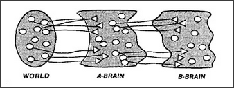

There is one way for a mind to watch itself and still keep track of what's happening. Divide the brain into two parts, A and B. Connect the A-brain's inputs and outputs to the real world — so it can sense what happens there. But don't connect the B-brain to the outer world at all; instead, connect it so that the A-brain is the B-brain's world!
Now A can see and act upon what happens in the outside world — while B can see and influence what happens inside A. What uses could there be for such a B? Here are some A-activities that B might learn to recognize and influence.
A seems disordered and confused. Inhibit that activity. A appears to be repeating itself. Make A stop. Do something else. A does something B considers good. Make A remember this. A is occupied with too much detail. Make A take a higher-level view A is not being specific enough. Focus A on lower-level details.
This two-part arrangement could be a step toward having a more reflective mind-society. The B-brain could do experiments with the A-brain, just as the A-brain can experiment with the body or with the objects and people surrounding it. And just as A can attempt to predict and control what happens in the outer world, B can try to predict and control what A will do. For example, the B-brain could supervise how the A-brain learns, either by making changes in A directly or by influencing A's own learning processes.
Even though B may have no concept of what A's activities mean in relation to the outer world, it is still possible for B to be useful to A.
This is because a B-brain could learn to play a role somewhat like that of a counselor, psychologist, or management consultant, who can assess a client's mental strategy without having to understand all the details of that client's profession. Without having any idea of what A's goals are, B might be able to learn to tell when A is not accomplishing them but only going around in circles or wandering, confused because certain A-agents are repeating the same things over and over again. Then B might try some simple remedies, like suppressing some of those A-agents. To be sure, this could also result in B's activities becoming nuisances to A. For example, if A had the goal of adding up a long column of numbers, B might start to interfere with this because, from B's point of view, A appears to have become trapped in a repetitive loop. This could cause a person accustomed to more variety to find it difficult to concentrate on such a task and complain of being bored.
To the extent that the B-brain knows what is happening in A, the entire system could be considered to be partly self-aware. However, if we connect A and B to watch each other too closely, then anything could happen, and the entire system might become unstable. In any case,
there is no reason to stop with only two levels; we could connect a C-brain to watch the B-brain, and so on.